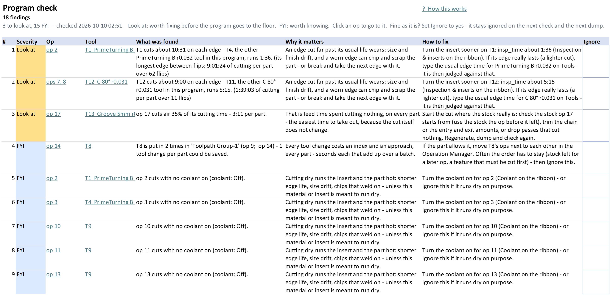

Program check
Ribbon: Parameter Table tab › Improve › Program check
What this is for
A second pair of eyes. It looks over every op and makes a Program check sheet of findings. Each finding says why it matters, how to fix it, and links to the op. Look at findings are worth a look before the program runs; FYI ones are just good to know. It changes nothing.
When to use it
- Before a program goes to the floor for the first time.
- After you edited a lot of ops.
- When you take over a program someone else wrote.
Steps
- Click Program check. The Program check sheet opens. The top lines say how many findings there are: so many to look at, so many FYI.
- Read the Look at findings first (they are at the top, most useful first). Each line has the Op, the Tool, What was found, Why it matters and How to fix.
- Click the op link to go to that op's row. Fix it there (or in Mastercam).
- If a finding is fine as it is (you meant it), set its Ignore cell to
yes. It stays ignored on the next check – and after the next dump too (it is kept in the part's .ptconfig file). Ignored findings show greyed at the bottom. - Run the check again after your fixes. It makes the sheet new each time and changes nothing on your other sheets.
What it looks for
| Finding | Kind | When |
|---|---|---|
| An edge runs much longer than usual (the main check) | Look at | A tool's edge time (its cut time per part ÷ flips per part) is more than 1.25 × the insert's Usual edge time that you type in the inserts table. With none typed: more than 1.5 × the other tools carrying the same insert in this program (their middle value) and at least 2 minutes longer. |
| Ops needing regeneration | Look at | needs_regen is yes: the toolpath, and its times, are out of date. |
| A feed that looks like the wrong unit | Look at | Per minute but under 1 in (25 mm), or per rev but over 0.1 in (2.5 mm). |
| CSS with no max RPM | Look at | Near the center, CSS asks for a huge RPM. Set a max RPM. |
| Lots of air cutting | Look at | Over 30% of an op's cut time in air, and over 1 minute. |
| The same tool at different speeds or feeds | FYI | Same tool and kind of op, speeds or feeds more than 10% apart. |
| Extra tool changes | FYI | One tool put in more than once in a toolpath group. |
| Coolant off on a cutting op | FYI | Usually forgotten. Dry on purpose? Ignore it. |
| Ops with no comment | FYI | The setup sheet and the operator see a blank name. |
Two things it does not do: it never flags tool inspection being off by itself (plenty of ops need no stops), and the words in an inspection comment do not decide what it counts as a flip. For a tool that never flips, its edge time is its cut time per part × the parts per edge you typed.


Worked example
On the Oil Spool Head the check finds 19 things: 3 to look at, 16 FYI. Two of them:
| Severity | Op | What was found | How to fix | Ignore |
|---|---|---|---|---|
| Look at | ops 7, 8 (T12) | T12 cuts about 9:00 on each edge – T11, the other C 80° r0.031 tool in this program, runs 5:15. | Turn the insert sooner on T12: insp_time about 5:15 (Inspection &
inserts on the ribbon) – or, if its edge really lasts, type the usual edge time for that insert on Tools. | |
| FYI | op 2 (T1) | op 2 cuts with no coolant on (coolant: Off). | Turn the coolant on for op 2 – or Ignore this if it runs dry on purpose. | yes |
The PrimeTurning rough runs dry on purpose, so its coolant finding is set to yes in Ignore. On the next
check it moves to the bottom, greyed. The T12 finding stays until you fix it – or type a
Usual edge time of 9:00 or more for the insert, if 9:00 is normal in your shop.